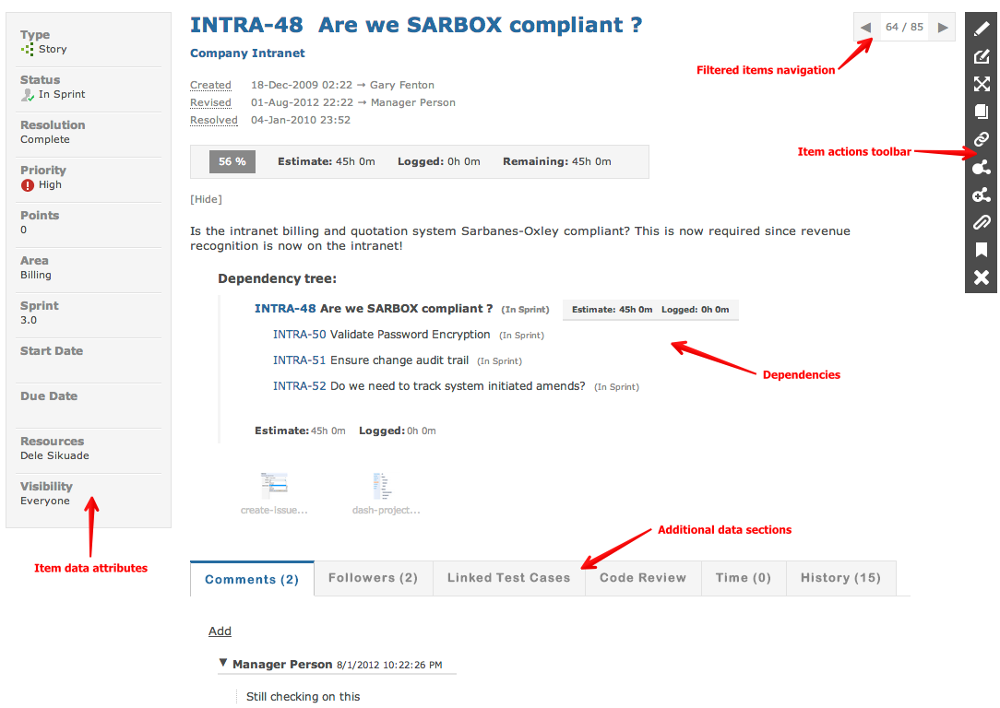

An item can represent a task, ticket, story, requirement, bug, feature request, enhancement or any other item that has process, state and requires collaboration.

Every project can have item types that are relevant for the project:
An item can have attributes (fields) that can hold key supplimentary information. These attributes can vary by item type to ensure only relevant information is captured and displayed.